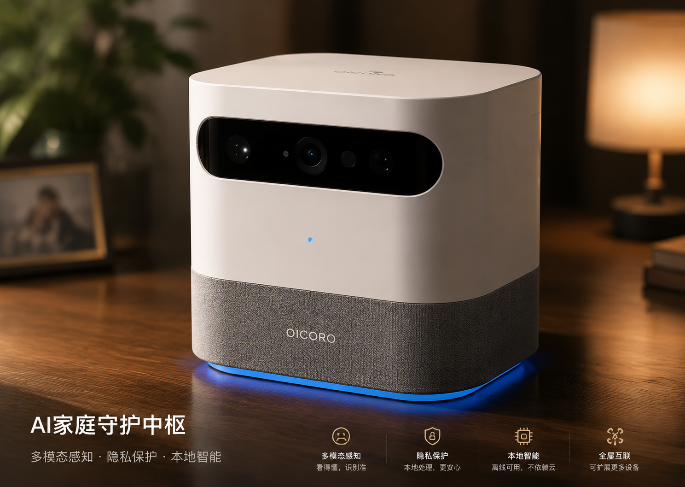
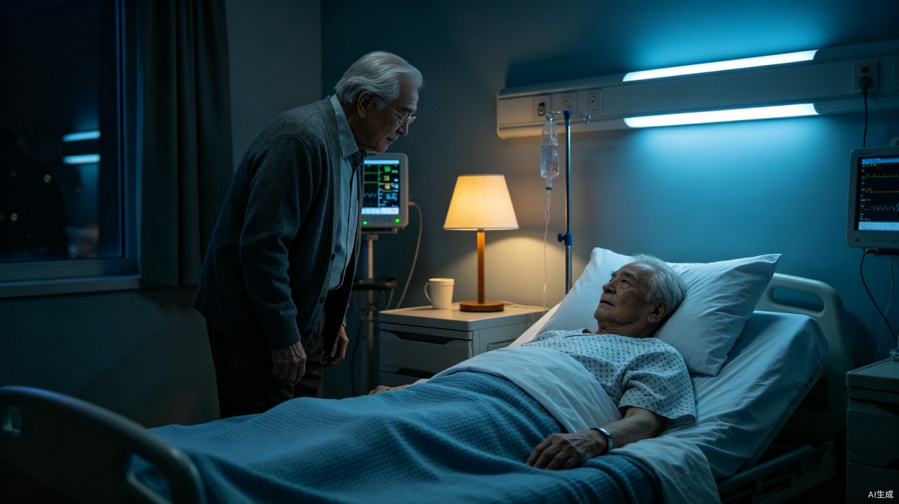
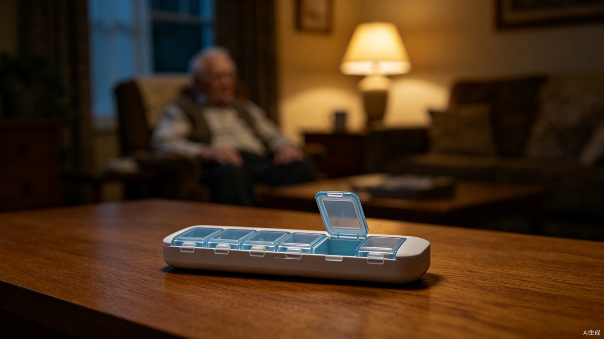
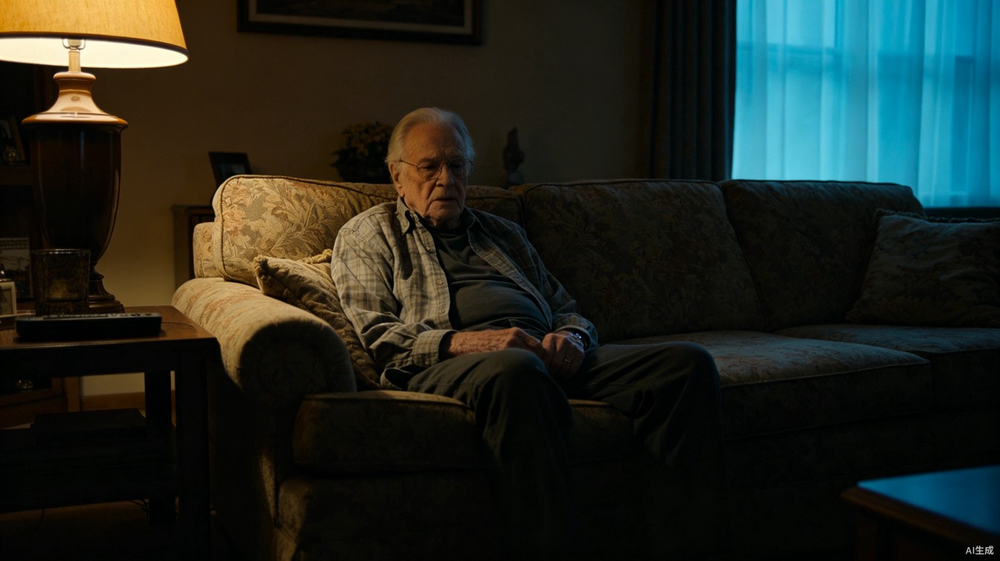
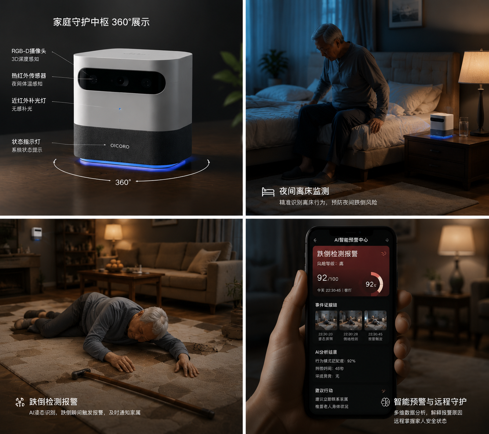

为家庭
让独居老人继续住在熟悉的家中，家属通过手机收到的是“可解释的风险简报”，而不是一条刺耳的报警。

↔ 拖动旋转 · 点击传感器
CREATE NEW EXPERIENCES
让独居老人继续住在熟悉的家中，家属通过手机收到的是“可解释的风险简报”，而不是一条刺耳的报警。
社区护士和护理机构借助个人行为基线，更早发现状态衰退，把干预窗口从“事后响应”提前到“趋势预警”。
用端侧隐私方案连接家庭、社区与机构，构建可规模化的老龄友好基础设施，而不牺牲数据主权。
A MODERN PLATFORM FOR HOME CARE
原始影像不离开家庭。设备端完成姿态识别、风险判断与证据链生成，只输出事件、分数与解释。
RGB-D、热红外、飞行时间与压力传感互相校验，降低单一传感器误报。
8 TOPS 神经处理单元在本地运行，响应时间小于 1 秒。
每一次报警都说明原因、证据链、风险等级与建议动作。
系统用 21 天建立个人作息、步态与空间使用习惯。同样是夜间离床，它会判断这是熟悉的起夜，还是需要关注的变化。
ONE SYSTEM, EVERYDAY CARE



16 SEC · PRODUCT FILM
真实家庭场景与端侧智能的完整产品叙事。
HOW OICORO CARES 01 / 04
凌晨 2:34，床垫压力消失。空间感知发现老人起身，比平时慢了 8 秒。
系统将步态、热区与 21 天个人基线比对。这是一次熟悉的起夜，不是紧急情况。
高度骤降、地面热区停留、语音无回应。三条证据链把风险提升至 92。
先语音确认，再按照护关系通知家属与社区联系人。每一次报警，都能解释为什么。
ENGINEERED FOR TRUST
点击模型上的感知模块，理解 OICORO 如何在不上传原始画面的前提下，重建空间语义。

MODULE FILM · 01
将硬件外观、内部传感器与实时数据流放在同一段讲解中，让技术不再需要一页页参数说明。
EXPLAINABLE AI SYSTEM
不是一个炫技面板，而是一条完整证据链：视觉检测、个人基线、多源验证、风险评分，最后生成给家属真正有用的行动建议。
REAL CARE, REAL PEACE
THE CARE INFRASTRUCTURE
一次部署，连接家庭中的床垫、药盒、门磁与可穿戴设备。
越了解一个人的日常，越能减少误报，提前识别真实变化。
把风险解释交给正确的人，形成家庭、社区与机构协同。
BUILD THE FUTURE OF CARE